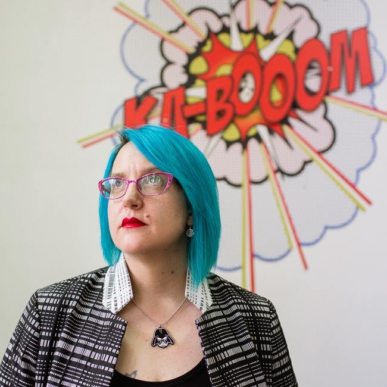
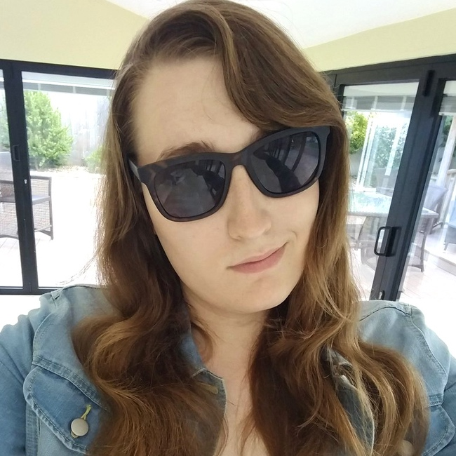
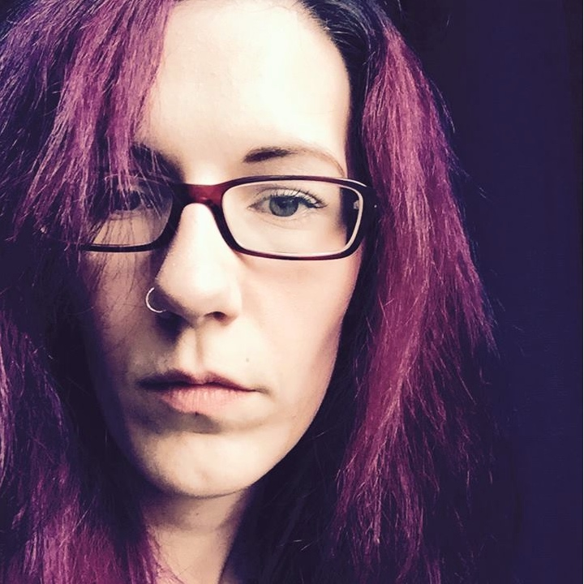
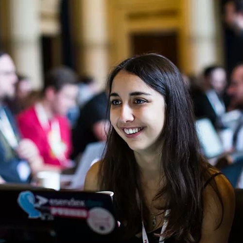
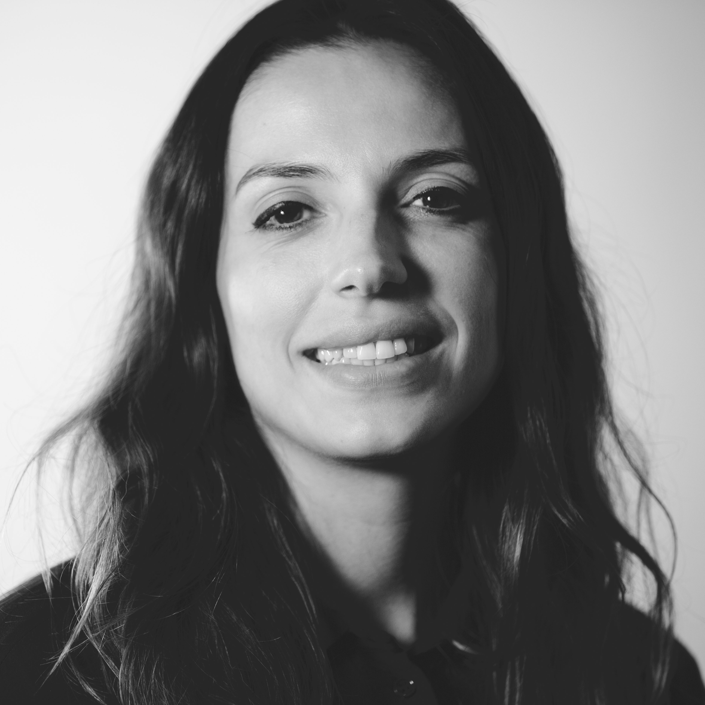

About Women in Technology
The University of Nottingham's Women In Technology conference day is for everyone; tech enthusiasts, non-programmers, students at college or university and women or men from all walks of life.
Only 14.4% of STEM jobs in the UK are occupied by women and out of all the CS students in the UK only 17.4% are female. This event strives to celebrate the individuals behind the figures, and share their fascinating life experiences in the tech industry.
HackSoc and the University of Nottingham have teamed up to inspire and encourage students to pursue technology as a hobby or as a career.
Our 2017 Partners
The #WIT17 event at the University of Nottingham is supported by the following industry partners!
If you are interested in becoming an event partner for #WIT17, contact us here.
Women in Tech Event Info
18th February 2017
At Women in Technology, you will hear from speakers who identify as women and currently work in the technology industry. We aim to reflect the diversity of careers that exist within the technology sector through providing talks that cover a wide range of technical roles and disciplines.
-

Julia Higginbottom
Julia is the founder of creative agency Rebel Uncut, TechEd social enterprise Rebel Labs, and a sought after innovation consultant with more than 15 years experience transforming communities and organisations through digital disruption. Julia strongly believes in technology as a force for positive change in both the commercial and public sectors, an ethos that has seen her kickstart successful innovation projects for organisations including IBM, Parliament and Goodyear.
-

Alice Casey
Alice helped to found the London branch of Code Liberation in 2016. She is currently studying Games Programming at Goldsmiths, University of London, and is always looking for new programming challenges. She has been embracing games since she could pick up a controller and continues to collect and play retro titles. Alice hopes to help make the world of games a more inclusive space for LGBT people, and in turn use it to cast light on issues faced in the community through interactive experiences and storytelling.
-
Dr Kate Devlin
Dr Kate Devlin is a Senior Lecturer in the Department of Computing at Goldsmiths, University of London. Kate works in the fields of Human Computer Interaction and Artificial Intelligence, focusing on cognition, sex, gender and sexuality, and how these might be incorporated into cognitive systems such as sexual companion robots. Kate is a campaigner for gender equality and is involved in national initiatives to improve opportunities for women in tech.
-

Charlie Allen
Charlie is a former administrator of nearly 10 years, who recently learned to code having never previously thought she could. Charlie now works for a small Rails agency in central London, and is also a coach and co-organiser of the London RailsGirls group. She is passionate about gender diversity in STEM.
-
Jess Rose
Jessica Rose is a self taught technologist focused on helping increase access to technical education and meaningful work in tech. She's leading developer outreach efforts at CrateDB as their head of developer relations, founded the Open Code meetup series and co-founded Trans*Code.
-
Timea Tabori
Timea Tabori is an Engine Programmer at Rockstar North and the Chair of IGDA Scotland. She is a STEM and Video Game Ambassador and CoderDojo mentor working to highlight career opportunities in digital technology to young people, especially women. She is passionate about bringing diversity and new voices to the games industry and creating playful experiences for everyone through improved collaboration.
The Women in Tech Panelists
This year at #WIT17 we have an exclusive Women in Tech Panel! Join us for the opportunity to ask the women on the panel anything about their technology careers in this workshop event. These ladies will cover everything; overcoming barriers, applying for jobs, interviews and much more!
-
Lizzie Lang
UBER
Lizzie is a UC Berkeley graduate and Silicon Valley native who manages a sales team responsible for launching UberEATS in UK expansion cities. She started her career with the San Francisco-based tech company in operations and logistics - setting up the Uber rides business in several UK cities including Sheffield, Southampton, York and Nottingham.
-
Melinda Seckington
FutureLearn
Melinda is a developer at FutureLearn, a social learning platform, and leads the team’s employee evangelism. She loves attending BarCamps, Hackdays and other tech meet ups, and since 2009 has been organising them at Geeks of London. She also writes at MissGeeky, a blog about all things geeky and girly. When she’s not busy with events or blogging, you can find Melinda curled up on her couch with a good book or video game.
-
Paula Clerkin
DSTL
Paula is a University of Nottingham Graduate Computer Scientist now working at the Defence Science Technology Lab. In 2014 Paula founded the Women in Tech Conference at The University of Nottingham - this very event! Last year Paula was awarded the Vice Chancellor's award for her fantastic achievements.
-

Jess White
WiT Notts
Jessica is a Nottingham-based developer. As well as writing code, Jessica helps organise WIT Notts and would love to hear from potential speakers. Some say Jessica is a caffiene powered half hobbit, but she hasn't found any magical rings lately.
-

Mergime Raci
Nice Agency
Mergime is a User Experience Designer at Nice Agency and one of the organisers of GeekGirl Meetup UK. As a former banker and having transitioned into both the Creative and Tech worlds, she relates highly to the journeys that some of you might decide to take. Empowering and inspiring other women (and occasionally the odd man!) is one of Mergime's biggest motivations.
| Time |
Activity |
| 09:30 |
Doors Open / Registration |
| 10:00 |
Introduction to #WIT17 |
| 10:05 |
Talks Begin |
| 11:20 |
Refreshment Break |
| 11:30 |
Talks Resume |
| 12:45 |
Lunch & Networking |
| 13:45 |
Workshops (1st Session) |
| 14:45 |
Refreshment Break |
| 15:15 |
Workshops (2nd Session) |
| 16:15 |
Closing Talk & Thanks |
| 16:30 |
Cake Drop & Networking |
| 17:30 |
Event Close |
|

At the Women in Technology conference you will have the opportunity to network with representatives from local, national and international technology companies.
Whether you are interested in tech as a career or just have some questions about specific subjects our partners are on hand to chat to our attendees throughout the day.

As well as talks there is opportunity for our attendees to pick up a new skill.
Never coded before?
Don't panic! We provide entry level workshops that are suitable for everyone no matter your previous experience or background.
Choose from a range of subjects from idea generation to learning how to code. We aim to provide you with the chance to learn something new.
Previous Women in Tech Partners
FAQ - some commonly asked questions about the Women in Technology event
-
Where does the Women In Technology event take place?
It will be held at the University of Nottingham's Jubilee Campus. It will be based in the Business School South building.
-
Is Women in Technology open to everyone?
YES - Everybody is welcome! Although the focus is on Women in Technology, the day itself is still a technology conference with amazing speakers, workshops and supporters. It's a valuable opportunity for everyone to come and listen to some brilliant stories and be inspired - no matter how you identify your gender!
-
Do we get food and drinks?
YES! We will provide refreshments on arrival, plus lunch and treats throughout the day. Be sure to join us in the afternoon for our Women in Technology Cake Drop!
-
Is there a code of conduct?
Yes. We are dedicated to providing a fun, harassment-free experience for everyone. We expect all of our attendees, sponsors, volunteers, and staff to be respectful and considerate of others. It is expected that everyone involved in our event will follow this code of conduct.
-
What workshops can I take part in?
At the last Women in Technology event we had workshops and talks given by Capital One, Code Club, ustwo, Intel Software, BCS Women and more. Our workshops are open to all levels and anyone can take part - sign ups will be offered to all ticket holders prior to the event.